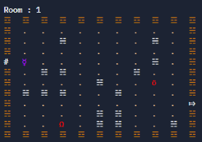
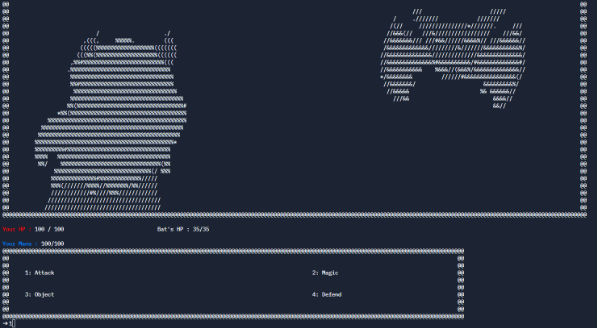

Je vais désormais vous parler de mes projets d'IUT. Je ne parlerais pas de mes projets de Lycée car un est un projet Python perdu à jamais. (Triste) Et l'autre est un site du même acabis que celui-ci. J'ai repris le style car au final j'aimais bien. Vous pourrez à tout moment cliquer sur le Titre du projet pour accéder à son Repo Github.
Le premier jeu que je vais mentionner est un jeu de donjon programmé en Java. Les dessins sont de l'ASCII art et je n'ai pas eu le droit d'utiliser le moindre objet. C'était immonde mais on l'a fait.
Dans ce jeu vous controllez une générale démone ayant pour but de tuer le roi démon afin d'arrêter la guerre entre les démons et les humains. Pour ce faire vous vous baladerez dans les diverses salles du donjon générés aléatoirement et remplis d'ennemis.
Lorsque vous rencontrerez un ennemis, un combat s'enclenchera et vous aurez accès à l'interface de combat afin de soit attaquer physiquement un ennemis, soit lui lancer un sort magique dépendant de ses statistiques en défense physique et magique.
Vous aurez également accès à une boutique toutes les 3 salles afin de pouvoir achéter des objets de soin de vie et de mana, de nouveaux sorts et des équiments augmentant vos stats.
Ce projet a été fait par moi et un ami dans le cadre d'un projet de classe (On a eu 19).
Toujours dans un projet de groupe, nous avons également fait un site internet présentant l'IUT en anglais. Je n'ai pas grand chose à dire de plus à ce sujet c'était actuellement ma seconde prise en main de l'HTML pour un projet et je pense que ça a rendu plûtot pas mal. Je ne sais pas pourquoi mais il avait l'ar ignoble quand je l'ai mis sur GitHub. J'ai peut être prit le mauvais fichier ?
Je ne pourrais pas envoyer le lien du repo GitHub pour les deux prochains projet ni vraiment envoyer des screenshots car d'une part ils sont sur les repos fait par mon IUT et ils sont privés et pour le premier il a été fait sur une version tellement instable de Javafx que j'arrive plus à l'ouvrir et pour l'autre il utilise des serveurs de l'IUT. Ce dont je n'ai pas accès sur le moment où je fais ce site. Veuillez m'en excuser.
Encore un projet de Java. Cette fois on a dû faire un Terraria-Like en utilisant JavaFx. Moi et mon groupe avons ducoup décidé de faire un Terraria-Like dans l'espace où notre protagoniste, une fière astronaute devra s'aventurer dans une planète inconnu afin d'en extraire des ressources et se faire des outils plus puissant. Sur son chemin le joueur rencontra différents ennemis au comportement différents pouvant laisser un sentiment de surprise. Le jeu n'est pas fini et les professeurs savaient qu'en 7 semaines on ne pouvait pas faire un jeu 100% aboutis mais on a quand même très bien avancé (Et on a encore eu 19).
Pour ce projet là, nous avions dû faire un site internet en PHP utilisant de la base de donnée. Pour ce projet là nous nous sommes penché pour faire un site de l'association de l'IUT où un utilisateur peut se connecter, faire des demandes d'achats à faire pour améliorer la vie d'étudiant dans l'IUT et proposer des évènements. Cela n'a pas l'air grand chose mais nous avions pas vraiment besoin de plus et là encore c'est un projet que l'on a dû faire dans un laps de temps court donc nous avons fait de notre mieux et honnêtement je suis assez fière du résultat.
Dans le cadre d'une autre SAE nous avions eu à faire un site d'annotations afin de vérifier la fiabilité des logiciels d'IA. Le but est de prednre un corpus constitué de résumés générés par intelligence artificielle et des résumés écrits par des humains, des utilisateurs peuvent participer en tant qu'annotateur afin d'annoter chaqe résumés. C'est de loin le projet le plus complet que j'ai eu à faire, j'ai eu recours à de l'Angular, du Flask et du SQL. Malheureusement dans les délais qui nous ont été donnés on a pas eu le temps de finir ce projet.
C'est tout pour le moment, j'en ajouterais au fûr et à mesure que je travaille.